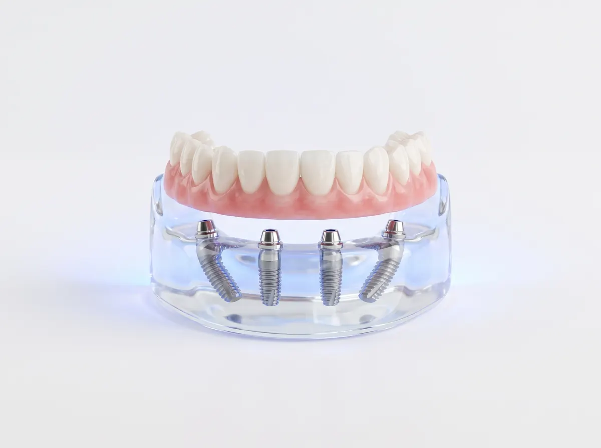
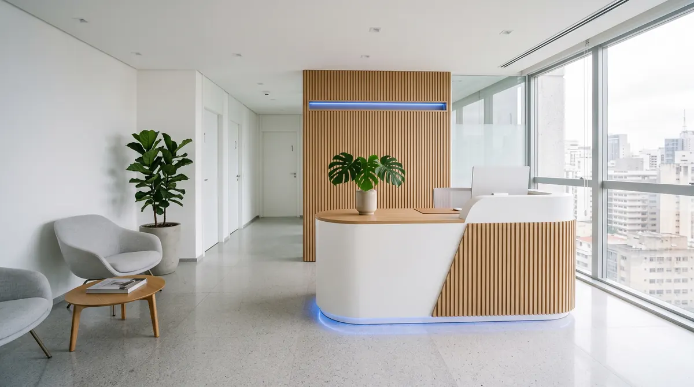

Design System · Especificação Viva
Design System
Guia de estilos vivo, padrões de interface e especificações canônicas extraídos diretamente do design de produção.
- 100% fidelidade ao design original
- 6 módulos de especificação
Sistema de Design
Canônico
Tipografia &
Componentes UI
Escala Tipográfica
A hierarquia tipográfica utiliza Manrope Variable com proporções balanceadas, kerning óptico e line-heights reduzidos nos títulos para alta densidade editorial.
Clínica de Excelência
Quando a precisão encontra a técnica
Planejamento e Execução Guiada
Prótese fixa sobre implantes integrados
Especialista em Cirurgia e Reabilitação Oral de Alta Complexidade
Cada caso clínico pede uma técnica individualizada. A indicação definitiva vem sempre após uma avaliação criteriosa com exames de imagem e planejamento 3D.
Há mais de 18 anos, nossa prática se dedica à implantodontia avançada, assegurando que você compreenda e participe ativamente de cada etapa antes de decidir.
A cirurgia é executada com anestesia local de última geração, garantindo tranquilidade absoluta durante todo o procedimento com suporte pós-operatório completo.
A prótese fica parafusada diretamente sobre os implantes e não é removida no dia a dia pelo paciente.
Cores & Superfícies
A paleta de cores combina tons neutros de titânio e cinza arquitetônico com azul médico de alta intensidade e gradientes dinâmicos de luz.
Variáveis de Cor Primárias
Gradientes Canônicos
Superfícies & Efeitos de Vidro
backdrop-filter: blur(20px) saturate(1.6);
background: #f4f5f7b3; border: 1px solid #ffffffbf;
backdrop-filter: blur(16px) saturate(1.4);
background: #ffffff8c; box-shadow: var(--shadow-md);
Componentes Canônicos
Catálogo interativo dos componentes de interface da aplicação exibindo estados padrão, foco, hover e variações dimensionais.
Botões & Ações (.btn)
Botão Primário (.btn--primario)
Gradiente animado contínuo com ícone giratório de 90° e texto de rolagem dupla.
Botão Vidro (.btn--vidro)
Translucidez com backdrop blur e borda de vidro com sombreamento suave.
Botão Escuro (.btn--escuro)
Corpo sólido escuro com ícone contendo o gradiente animado azul.
Botão Claro (.btn--claro)
Fundo branco sólido com ícone em azul puro para contraste sobre painéis escuros.
Controle de Navegação (.seta)
Botões de controle de slide em pílula com brilho gradiente animado.
Badges & Expansores
Etiquetas de categoria e botões discretos de expansão textual.
Cards & Contêineres de Informação
Prótese Parafusada Fixa
Segurança e estabilidade total para mastigar e sorrir sem receio.
A intervenção ocorre sob anestesia local profunda, com controle medicamentoso preventivo.
Layout & Espaçamentos
Regras canônicas de contenção, paddings de painéis modulares e escala de espaçamento geométrico proporcional.
Escala de Espaçamento Modular
Padrões de Layout Extraídos do Projeto
Abaixo demonstram-se as seções reais completas do projeto representando os 2 padrões arquiteturais-chave: Split Editorial e Grade de Contato em Painel Escuro.
Quando a reabilitação total é a solução indicada
Para quem perdeu todos ou quase todos os dentes de uma arcada e quer voltar a mastigar e sorrir com uma prótese fixa.


Uma arcada inteira de dentes fixos apoiada em quatro implantes. Os dois de trás ficam inclinados para aproveitar melhor o osso disponível.
- 4
- implantes por arcada
- 1
- prótese fixa sobre eles
Provisório fixo, em muitos casos, logo após a cirurgia.
Indicações mais comuns
-
Perdeu todos ou quase todos os dentes
Uma arcada inteira pode ser reabilitada sobre quatro implantes.
-
Usa dentadura que solta ou machuca
A prótese fica parafusada nos implantes e não é removida no dia a dia.
-
Tem dentes comprometidos que não podem ser mantidos
Quando indicado, extrações e implantes são planejados juntos.
-
Tem pouco osso e quer evitar enxertos extensos, quando possível
Os implantes inclinados aproveitam o osso disponível em muitos casos.
-
Quer reduzir o tempo sem dentes
Em muitos casos, um provisório fixo é instalado logo após a cirurgia.
A indicação só é feita após avaliação clínica e tomografia.
Seu novo sorriso começa com um bom planejamento.
Na avaliação, o Dr. Henrique examina o seu caso, pede os exames necessários e explica com calma as opções de tratamento.
Agendar avaliação
-
Horários
Seg a sex · 8h–19h Sáb · 8h–12h
Movimento & Interações
Todas as transições baseiam-se em curvas de aceleração física natural (--ease-out: cubic-bezier(.16, 1, .3, 1)) e keyframes otimizados para GPU.
@keyframes tec-gira
Rotação suave orbital 360° para engrenagens e radares SVG.
@keyframes a4-ping
Pulso expansivo com atenuação de opacidade para pontos focais.
Hover Lift & Glow
Elevação de -6px e intensificação de sombra ao focar/pairar o mouse.
Catálogo de Ícones SVG
Ícones vetoriais traçados (stroke-width: 1.8 a 2.0, linecap/linejoin arredondados) com herança de cor direta através de currentColor.